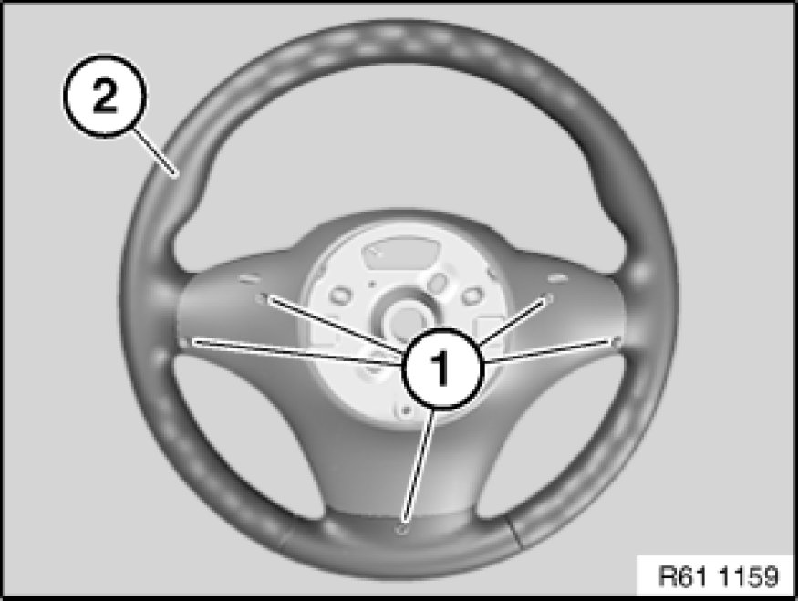
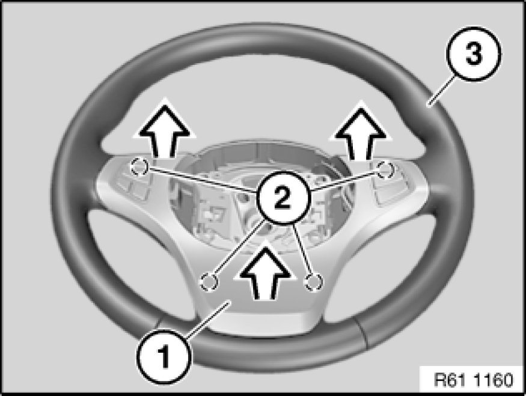
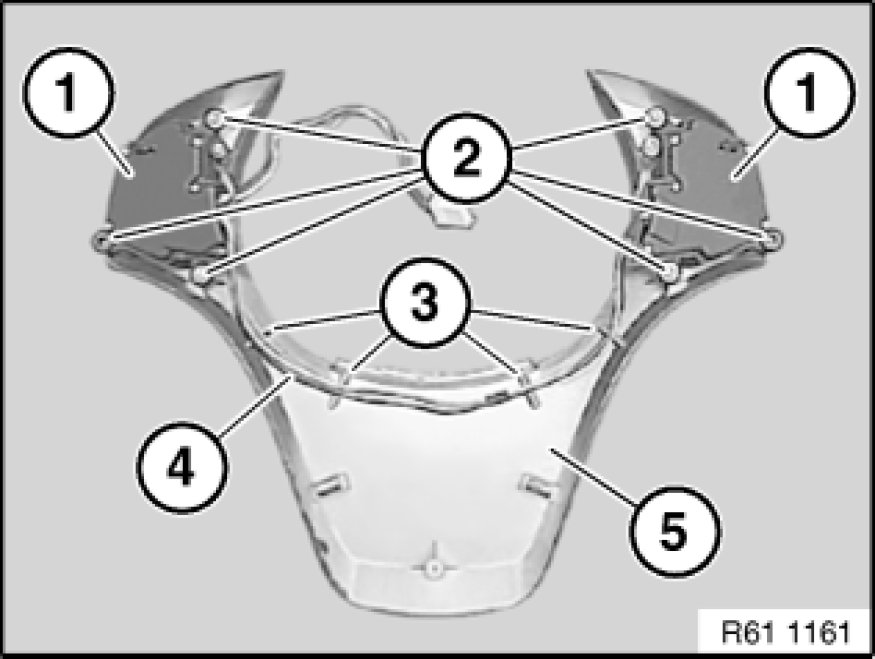

Steering Mounted Controls Assembly: Service and Repair
61 31 228 - Replacing switch on sports steering wheel

Necessary preliminary tasks:
- Remove sports steering wheel Removing and Installing Sports Steering Wheel

Release screws (1) on sports steering wheel (2).

Unclip complete trim (1) in direction of arrow from mountings (2) and remove from sports steering wheel (3).

Loosen screws (2).
Remove both switches on sports steering wheel (1) together from trim (5).
Installation:
Make sure wiring harness (4) is correctly laid in associated mountings (3).